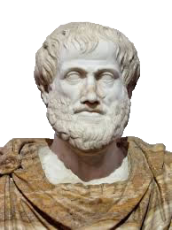
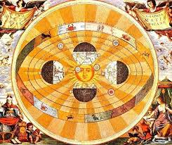

| The first idea of Physics was derived fom Aristotle, who lived in the 4th Century b.c., and was thus called Aristotelian Physics. Aristotle placed the Earth at the center of everything, with all the celestial bodies, such as the sun and the moon, orbiting it. The stars were 'woven' into a shell around all of this. This idea was commonly accepted as the truth for hundreds of years, becuase there was nothing against it until much later. It became so wide spread as to be accepted by the Catholic Church, which posed some problems for later scientific achievement.
It wasn't until the 16th Cemtury that this idea was challenged by Copernicus. He claimed that the Sun was the center of the universe and wrote a book on his death bed, De Revolutionibus Orbium Coelestium (On the Revolutions of the Heavenly Spheres), in which he explaned his idea, dubbed Heliocentrism, in a very simple light. This attracted others to the theory, albiet after Copernicus' death, mainly due to the fact that the Church openly and fully denied anything about the idea, and declared Copernicus a heritic. This made all of his followers heritics and made the Theory hard to back up with such an adversary as the Catholic Church.
Although Copernicus was not very successful in promoting the theory in his life, other thinkers like Johannes Kepler, who expanded Heliocentrism to include elipiptical orbits, and Galileo Galilei, who helped 'prove' the findings using a telescope, expanded on it in the following century. Despite this, the Church did not concede its will, and actually had so much power as to put Galileo under house arrest. It was while Galieo was under his house arrest that he preformed his famous expirament where he dropped two balls with different size and mass, which hit the ground at the same time, proving they fall at the same rate of speed, and not at the Leaning Tower of Pisa, as is commonly misbelieved. In any case, it wasn't until the late 1800's that the church fully embraced Heliocentrism.

In the the 18th century William Herschel started to observe that the Sun was not the center of the Universe, and Friedrich Bessel started to draw the same conclusions in the 19th century, but it took another hundred years for Albert Einstien to publish his works on the Theory of General Relativity in 1915, which puts nothing at the center of the universe. It also tells us the universe is made of a space time fabric that everything sits in, which can bend light and is a better representstion of gravity and the universe than older models (such as Newton's) in general. Albert Einstien also discovered the E=mc^2 equation with his relativity work. This idea is the one most commonly accepted by scientists to this day. |